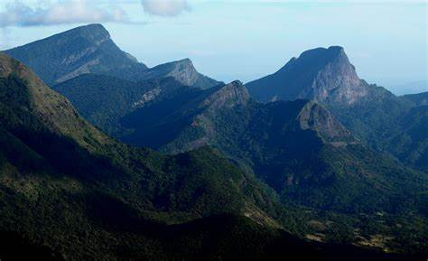
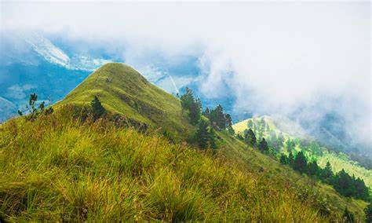
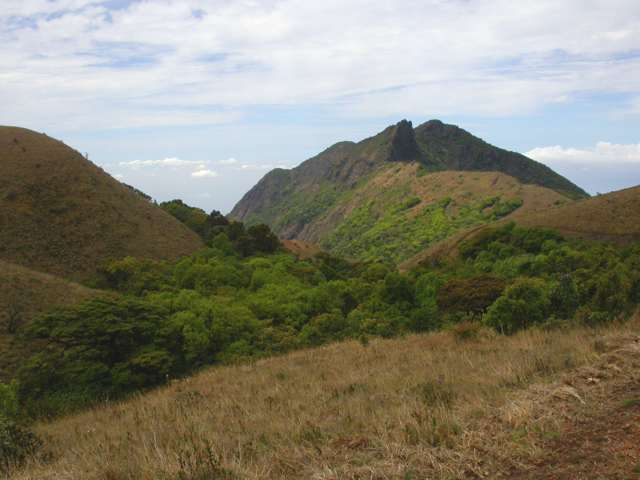
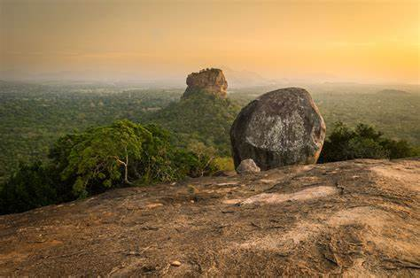
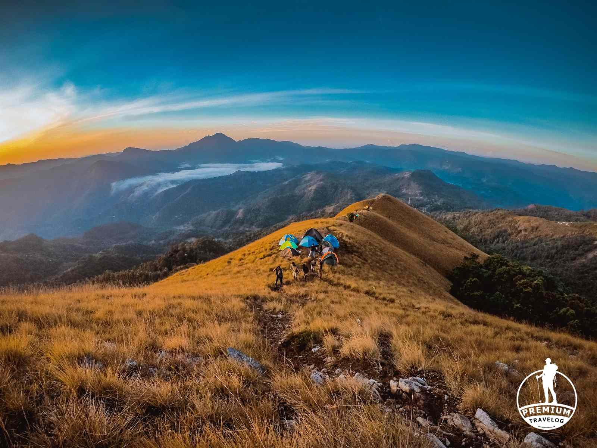
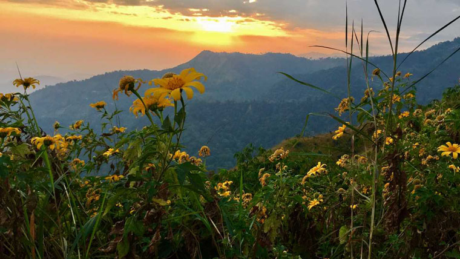
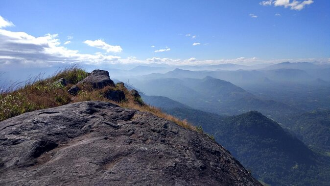
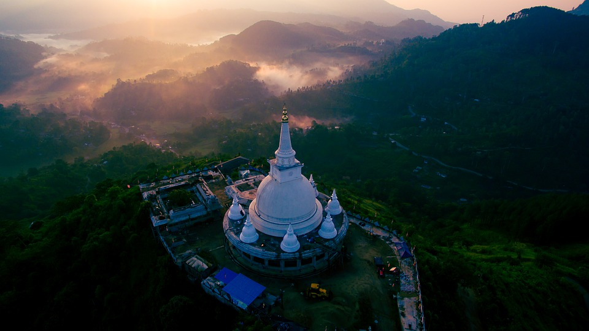

Knuckles Mountain Range
Explore rugged terrain and stunning biodiversity.

Ella Rock
A panoramic view of Ella Gap awaits adventurous hikers.

Kirigalpoththa
Hike Sri Lanka’s second-highest peak in tranquil isolation.

Bambarakanda Falls
Reach the tallest waterfall amidst lush landscapes.

Hanthana Mountain Range
A beautiful series of peaks perfect for day hikes.

Pidurangala Rock
Climb for unmatched views of Sigiriya Rock Fortress.

Narangala
Experience stunning sunrises atop rolling hills.

Kalupahana
A peaceful, untouched trail near Bambarakanda Falls.

Alagalla Mountain
Known as Potato Mountain, a tough but rewarding climb.

Dothalugala Trail
A tranquil journey through the Knuckles Range forests.